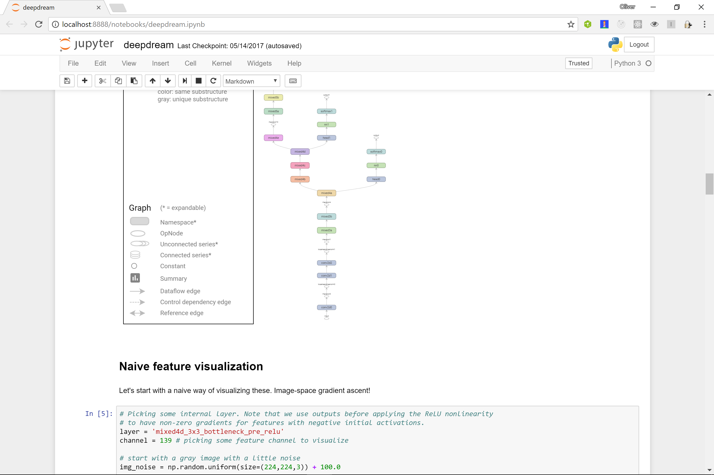

How do Convolutional Neural Networks "see"?
Oliver Zeigermann / @DJCordhose
http://djcordhose.github.io/ai/2017_scipy_cnn_introspection.html
CNNs consist of many layers containing many feature channels
Inception Model by Google
What goes on inside such a CNN?
Three Techniques to visualize this
I
Which parts of the image trigger the elephant activation
Deep Learning with Python, François Chollet, Manning
II
Which
Feature Channels
are Activated
by which images?
Deep Learning with Python,
François Chollet, Manning
III
Deep Dream
Generate Images that fully activate a feature channel
Gives you an impression what each channel "sees"
Deep Dream Notebook
Working on Google's Inception Model trained with ImageNet
- git clone git@github.com:tensorflow/tensorflow.git - cd tensorflow/tensorflow/examples/tutorials/deepdream - jupyter notebook
Early layers show patterns
mixed3b_1x1_pre_relu, 101
Deeper Layers show more abstraction
mixed4d_3x3_bottleneck_pre_relu, 139
Final Layers can be quite scary
mixed5b_5x5_pre_relu, 0068
Deep Dream can also Dream / Hallucinate

By "over-interpreting" a specific channel on a random image